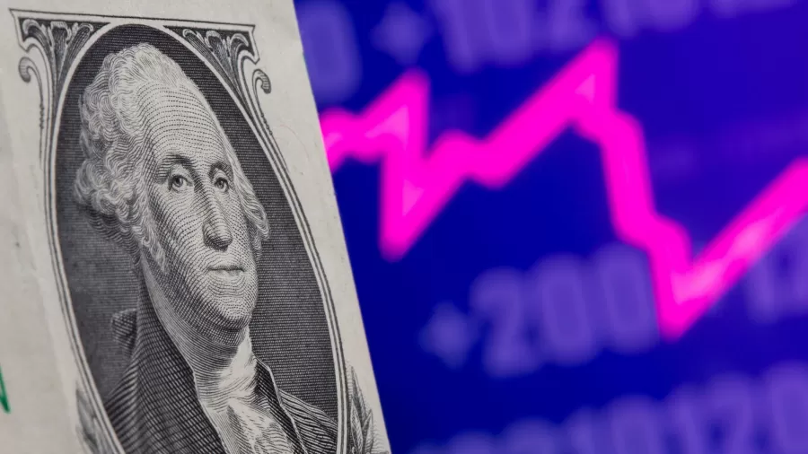
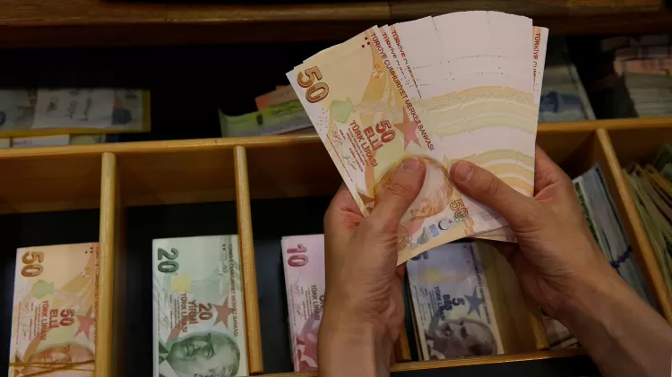

Quais são as 5 moedas mais desvalorizadas do mundo em relação ao dólar?

Quais são as 5 moedas mais desvalorizadas do mundo em relação ao dólar? Conheça
Imagem: Dado Ruvic/Reuters
Gabriel Dias
Colaboração para o UOL
29/03/2022 04h00
Mesmo com a guerra e a crise econômica, o dólar operou em queda na última semana. Na segunda-feira (25), a moeda norte-americana estava na casa de R$ 4,79 na venda.
O dólar norte-americano é utilizado como referência para as operações em todo o mundo e a importância dessa moeda se dá por várias razões. Primeiro, porque os Estados Unidos são uma nação de devedores confiáveis e possuem uma economia forte. Além disso, o dólar é uma moeda estável, que não costuma ter quedas acentuadas e inesperadas.
Guia do Investidor UOL: evento grátis ensina você a investir.
Mas você sabe quais são as moedas mais desvalorizadas do mundo em relação ao dólar?
Um levantamento feito pela Economatica, que compara moedas de 25 países, mostra que a lira turca é a moeda mais desvalorizada do mundo, seguida das moedas de Argentina e Chile (peso). Já o real brasileiro ocupa a 12ª posição da lista.

Notas da lira turca
Imagem: Murad Sezer/Reuters.
A Turquia viu sua moeda despencar em 2021, com o dólar subindo mais de 37% sobre a lira. Atualmente, uma lira está valendo apenas 0,067 dólar americano.
A interferência do presidente turco, Recep Tayyip Erdogan, sobre a política monetária do país é apontada como um dos principais motivos para a crise cambial. A ordem ao banco central turco é de cortar os juros, priorizando o crédito e as exportações, deixando de lado a estabilidade da moeda.
Essa desvalorização da moeda tem feito a população turca sentir no bolso, com a inflação do país atingindo seus níveis mais altos.